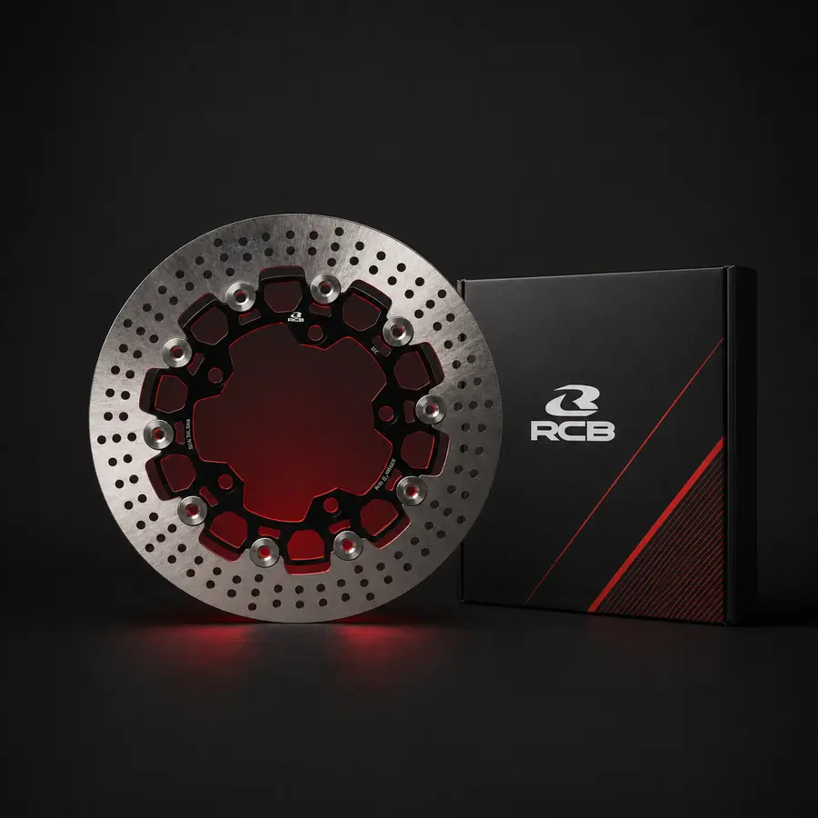

Floating · 2 mảnh
RCB RS Series Floating
- Mã tham khảo 01D0532B
- Kích thước 267 / 298 mm
- Vật liệu tâm Nhôm 7-series T6
- Phù hợp LC135, 125ZR, Y15ZR, Y16ZR*
RS là đĩa hai mảnh, tâm nhôm 7-series T6 và chốt thép không gỉ. Mã 01D0532 đường kính 267 mm dùng cho LC135 5S/125ZR; LC135 4S hoặc LCV8 có cấu hình cần pat. Mã 01D0545 là bản 298 mm cho Y15ZR/Y16ZR. Hãy xác nhận đời xe và heo trước khi mua.
Giá: liên hệ 0878 976 186